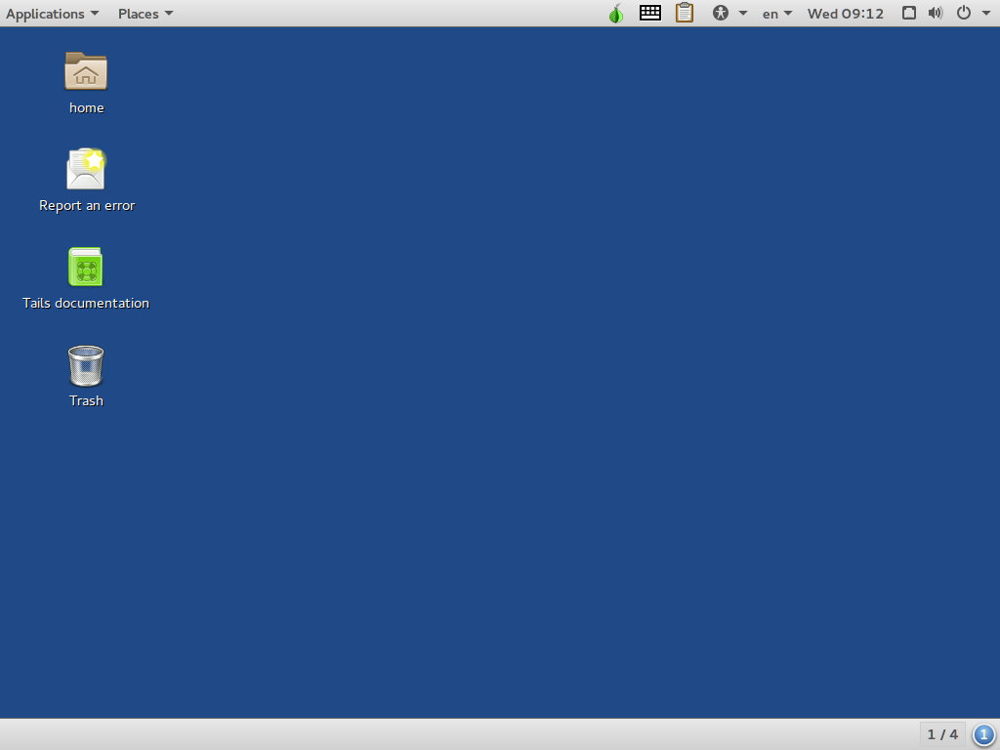
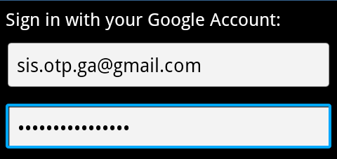

OTP (One time password rješenja) - primjena Google Authenticatora
Izradili Veronika Balažin, Jelena Gorički, Sven Grđan, Valentina Kaltnecker
Sadržaj |
One-time password
One-time password (OTP) je lozinka koja je važeća za samo jedno prijavljivanje u sustav ili za jednu transakciju. One-time password rješenje koristi dvo-faktornu autentifikaciju koristeći nešto što korisnik zna (lozinka) u kombinaciji sa nečim što korisnik posjeduje (mobilni telefon), kako bi se za korisnika generirao one-time password. OTP-i predstavljaju dodatnu razinu zaštite i otežavaju svim zlonamjernicima neovlašteni pristup informacijama, mrežama ili online računima.[1]
Pomoću OTP-a izbjegava se velik broj nedostataka klasičnih (statičnih) lozinki. Do razvoja OTP-a je došlo zbog toga što je sve više korisnika prisiljeno unositi osjetljive informacije na nepouzdane uređaje. Sve više i više usluga je dostupno putem interneta, a s time raste i broj osjetljivih informacija koje korisnik mora štititi. Lozinke su najbolji primjer za to. Elektronička pošta, bankovni računi, računi na socijalnim mrežama su samo neki od primjera koji omogućuju lozinkom zaštićeni pristup uslugama. [2]
Korisnik koji se prijavi na takav račun sa nepouzdanog uređaja, izlaže se riziku da će keylogger zabilježiti njegovu lozinku i omogućiti drugima neautorizirani pristup. Najveći nedostatak klasičnih lozinki koji OTP-i nemaju je ranjivost na replay napade. Replay napad je vrsta napada u kojem se važeći prijenos podataka zlonamjerno ili prijevarom ponavlja ili uspori. To znači da potencijalni napadač koji uspije zabilježiti one-time password koji se već iskoristio za prijavu u sustav ili za obavljanje transakcije, neće moći zloupotrijebiti taj OTP jer on više nije važeći. [3]
Nedostatak OTP-a je da ih ljudi nisu u stanju zapamtiti te je zbog toga potrebna dodatna tehnologija kako bi ih se moglo koristiti.
--Svgrdjan 11:02, 20. siječnja 2013. (CET)
Generiranje one-time passworda
Za razliku od statičnih lozinka, OTP-i se mijenjaju prilikom svakog prijavljivanja u sustav. Algoritmi pomoću kojih se generiraju OTP-i koriste slučajnost ili pseudo-slučajnost. To je nužno jer bi na temelju prethodnih OTP-a bilo jednostavno predvidjeti sljedeće OTP-e. Konkretni one-time password algoritmi uvelike se razlikuju u svojim detaljima. [4]
Sva one-time password rješenja koja se danas najčešće koriste temelje se na nekoj vrsti kriptografskog procesa kako bi se generirala lozinka pomoću sinkronizacijskog parametra (vremenska vrijednost ili vrijednost brojača), tajnog ključa i možda i PIN-a. [5]
Matematički algoritmi
Kada se koriste matematički algoritmi za generiranje OTP-a, svaki novi one-time password se može generirati iz prethodno upotrijebljenih OTP-a. Jedan od primjera matematičkih algoritama, kojeg je osmislio Leslie Lamport, koristi jednosmjernu funkciju (primjera radi, možemo ju nazvati g). Ovaj OTP sustav radi tako da počinje sa početnim kodom k (tajna, lozinka) i zatim se generiraju lozinke od tog k: g(k), g(g(k)), g(g(g(k)))… koliko god je puta potrebno. Ako je potrebna neodređena serija lozinki, može se odabrati novi početni kod kada iscrpe sve mogućnosti za k. Na ovoj shemi temelji se S/KEY one-time password sustav. [6]
Napadač koji uspije vidjeti one-time password može imati pristup u jednom vremenskom razdoblju ili u jednoj prijavi, ali taj OTP postaje beskoristan jednom kada to razdoblje istekne. Kako bi se dobila sljedeća lozinka u seriji od prethodnih lozinki, treba se pronaći način kako izračunati inverznu funkciju od g. Budući da se g bira tako da bude jednosmjerna, to je vrlo teško učiniti. Ako je g kriptografska hash funkcija, što je obično slučaj, to je računalno neisplativ zadatak.
S/KEY
S/KEY je one-time password sustav razvijen za autentifikaciju na Unix operativnim sustavima i to iz nepouzdanih javnih računala na kojima korisnici ne žele upisivati svoje dugoročne lozinke. Korisnikova lozinka se kombinira u offline uređaju s kratkim skupom znakova i s brojačem koji se smanjuje (dekrementirajući brojač) da se formira jednokratna lozinka. Neil Haller, Phil Karn i John Walden razvili su S/KEY sustav krajem 1980-ih godina.
Kako se taj skup znakova ne mijenja dok brojač ne odbroji do nule, moguće je pripremiti listu jednokratnih lozinki, u nizu, koje korisnik može nositi sa sobom. Isto tako, korisnik može unijeti lozinku, skup znakova i željenu vrijednost brojača i generirati jednokratnu lozinku koja se može poslati putem mreže. Potonji oblik korištenja S/KEY sustava je učestaliji i temeljem njega razvila se challenge-response autentifikacija.
S/KEY sustav radi na sljedeći način:
- U početnom koraku korisnik se prijavljuje na sigurni autentifikacijski server. Korisnik izabire lozinku (tajnu) k i n, koji označava broj OTP-a koje korisnik želi generirati;
- Softver primjenjuje g, kriptografsku hash funkciju, na k n-puta. Rezultat je skup od n OTP-a. Ovaj korak se može matematički zapisati kao: g(k), g(g(k)),…, g^n(k);
- Korisnik dobije skup od n lozinki, ali u obrnutom redoslijedu: g^n(k) , …, g(g(k)), g(k);
- Zadnja lozinka g^n(k) sprema se na server, dok se sve ostale odbacuju;
- Prvi puta kada se korisnik prijavi pomoću S/KEY softvera, od njega se traži n-1 broj i lozinka. Rezultat n-1 iteracija kriptografske funkcije šalje se na server, gdje se na dobivenu poruku kriptografska funkcija primjenjuje jednom i uspoređuje se sa prethodnom spremljenom lozinkom. Ako se one podudaraju, lozinka g^n(k) se mijenja sa g^(n-1)(k) i smanjuje se n, kako bi sustav bio spreman za sljedeći postupak autentifikacije;
- U slučaju da korisnik ne posjeduje S/KEY softver, dobivene lozinke korisnik može ispisati i uvijek ih imati uz sebe te ih iskoristiti jednu po jednu. [7]
{kind=link}
Snaga S/KEY sustava je ta da se samo jednokratna lozinka šalje na mrežu. Korisnikova tajna pass-fraza nikada se ne šalje na mrežu, čak ni prilikom prijave. Dodatnu sigurnost osigurava i to što tajne informacije ne trebaju biti pohranjene na bilo kojem sustavu. Prava snaga S/KEY sustava leži u tome što koriste kriptografske hash funkcije za koje je veoma teško odrediti inverz, kao što je već napomenuto. OTP-i u S/KEY sustavu su dužine 64 bita. Određeno je da će oni biti te duljine jer im ta duljina osigurava sigurnost, a opet su dovoljno kratke da se mogu ručno unijeti kada je to potrebno.
S/KEY sustav je ranjiv na man-in-the-middle napade. Man-in-the-middle napadi su vrsta aktivnog prisluškivanja u kojima napadač uspostavlja vezu sa žrtvama i prenosi njihove poruke. Žrtve MitM napada su uvjerene da komuniciraju direktno, dok u stvarnosti cijeli njihov razgovor kontrolira napadač. Ovaj sustav je također ranjiv na određene race conditionse (greška u sustavima, izlaz je ovisan o slijedu ili vremenskom tijeku nekontroliranih događaja). Jedan od primjera za to je kada napadač pomoću softvera prisluškuje mrežu kako bi saznao prvih d-1 znakova u lozinci (gdje je d jednak duljini lozinke), pokreće svoju vlastitu TCP vezu sa serverom i iskušava sve važeće znakove na d-toj poziciji dok jedan uspije. Ove vrste ranjivosti mogu se izbjeći korištenjem SSH, SSL… [8]
Na slici desno prikazan je ispis OTP-a kreiran pomoću S/KEY sustava. Kako bi se OTP-i mogli lakše koristiti, pretvaraju se u šest kratkih engleskih riječi koje čini jedno do četiri slova. Riječi se biraju iz rječnika koji sadrži 2048 riječi, s time da se 11 bitova pretvara u jednu riječ.
--Svgrdjan 11:08, 20. siječnja 2013. (CET)
Challenge-Response autentifikacija
Korištenje izazov-odgovor (Challenge-Response) autentifikacije zahtjeva od korisnika da odgovori na neku vrstu izazova. Primjerice, korisnik mora unijeti neku poznatu vrijednost, kao što je njegov PIN, kako bi se OTP generirao. Isto tako, ponekad je u token potrebno unijeti vrijednost koja se na token generirala. Kako bi se izbjegli duplikati dodaju se dodatni brojači, tako da ako korisnik dobije isti izazov dva puta rezultat će svejedno biti dva različita OTP-a.
Najveći dio shema koje se baziraju na Challenge-Response autentifikaciji koriste nešto što korisnik posjeduje, uređaj koji se može izgubiti ili može biti ukraden. Kako bi se poboljšala sigurnost dodaje se nešto što korisnik zna u nekom obliku osobnog identifikacijskog broja (PIN-a). Napadaču su potrebni i uređaj i PIN kako bi mogao oponašati nekoga. Uz to, kao dodatna zaštita većina uređaja prestaje raditi nakon unosa nekoliko pogrešnih PIN-ova. [9]
OATH-ov Challenge-Response algoritam (OCRA) je generalizacija HOTP algoritma sa varirajućim podatkovnim ulazima koji se ne temelje samo na brojaču i vrijednosti tajnog ključa. Formulom bi se OCRA prikazao kao: OCRA = kriptografska funkcija(K, ulazni podaci), gdje K predstavlja tajni ključ, kriptografska funkcija je prilagođena HOTP-SHA1 funkcija čija vrijednost, nakon što se pretvori u HOTP vrijednost, je u obliku šesteroznamenkastog broja. Ulazni podaci se sastoje od vrijednosti brojača, pitanja (izazova), informacija o trenutnoj vezi i broja vremenskih razmaka od početka UNIX vremena. [10]
Ovakva vrsta OTP sustava trenutno se najviše koristi kako bi se dodala autentifikacija na kreditne i debitne kartice. [11]
--Svgrdjan 11:18, 20. siječnja 2013. (CET)
HOTP
HOTP je algoritam temeljen na događaju, a koristi se za generiranje one-time passworda. Puni naziv glasi HMAC-based One Time Password, gdje je HMAC akronim od Hash-based Message Authentication Code (konstrukt za izračunavanje message authentication code-a koji uključuje kriptografsku hash funkciju i tajni kriptografski ključ). HOTP je jednostavan algoritam koji može implementirati bilo koji proizvođač hardware-a ili software-a. Prilikom razvijanja ovog algoritma, veliki značaj je stavljen na upotrebljivost kod krajnjeg korisnika i mogućnost da se implementira u jeftin hardware poput SIM ili Java kartica. Zahtjevi ovog algoritma su [12]:
- Algoritam mora biti temeljen na slijedu ili brojaču;
- Algoritam bi trebao biti ekonomičan za implementaciju u hardware-u, minimizirajući potrebu za baterijom, brojem gumbova, veličinom LCD ekrana te računalnom snagom;
- Algoritam mora raditi s tokenima koji ne podržavaju unos brojeva, ali se može koristiti sa softiciranijim uređajima kao što je uređaj za sigurno unošenje PIN-a;
- Vrijednost prikazana na tokenu mora biti lako čitljiva i unesena od strane korisnika. HOTP vrijednost mora sadržavati barem 6 znamenki te je poželjno da je vrijednost samo numerička, kako bi bila lako unosiva na ograničenim uređajima poput telefona;
- Mora postojati jednostavan i razumljiv mehanizam za resinkronizaciju brojača;
- Algoritam mora koristiti jaku dijeljenu tajnu. Duljina dijeljene tajne mora biti najmanje 128 bitova, a preporučeno je 160 bitova.
HOTP algoritam se temelji na povećavajućoj vrijednosti brojača i statičnom simetričnom ključu poznatom jedino tokenu i validacijskom servisu. Kako se za HOTP koristi HMAC-SHA-1 algoritam, HOTP možemo zapisati kao HOTP(K,C)=Truncate(HMAC-SHA-1(K,C)), gdje je K ključ, C brojač, a Truncate je funkcija koja HMAC-SHA-1 vrijednost pretvara u HOTP vrijednost. Važno je napomenuti da HOTP algoritam nije zamjena za enkripciju i ne osigurava privatnost prijenosa podataka. Protokol koji implementira HOTP algoritam mora podržavati autentikaciju u 2 koraka, tj. razmjenu i verifikaciju nečega što korisnik zna (lozinka, pin) i nečega što korisnik ima (token), ne smije biti osjetljiv na brute-force napade i trebao bi biti implementiran preko sigurnog kanala.
--Vakaltnec 11:40, 20. siječnja 2013. (CET)
OTPW
OTPW je one-time password sustav razvijen za Unix operacijske sustave, a podržavaju ga i OpenBSD, NetBSD i FreeBSD. Korisnikova stvarna lozinka se ne prenosi preko mreže, već se kombinira s kratkim skupom znakova i skupom jednokratnih tokena. Lozinke su pažljivo generirani nasumični brojevi. Generator nasumičnih brojeva se bazira na RIPEMD-160 hash funkciji tako što mu se prosljeđuju zajedno hashirani izlazi različitih shell naredbi, a to mu osigurava nepredvidljivost.
Za razliku od S/KEY-a koji kao lozinke koristi slijedove kratkih engleskih riječi, OTPW base64 kodiranje omogućuje da se više lozinki ispiše na jedan papir. Postoji i prefiks lozinka koja osigurava da niti krađa popisa lozinki, niti prisluškivanje ne mogu pružiti neautoriziran pristup. Ipak, sigurnost koju pruža OTPW ne može se usporediti s onom koju pruža challenge-response sustav.
One-time password autentikacija s OTPW paketom je ostvarena putem .otpw datoteke smještene u korisnikovoj home mapi. Korisnik koji želi aktivirati one-time password samo treba pokrenuti otpw-gen program. Program će ga zatražiti prefiks lozinku koju korisnik mora zapamtiti, a zatim će na standardni izlaz ispisati popis lozinki. Popis se može uređivati i ispisati na papir, a prefiks lozinku je potrebno zapamtiti. Prilikom logiranja, riječ 'password' će slijediti troznamenkasti broj. Lozinka koju korisnik upisuje se sastoji od prefiks lozinke koju korisnik mora znati te lozinke s popisa pod rednim brojem koji je naveden, bez ikakvih drugih znakova ili razmaka. [13]
--Vakaltnec 11:40, 20. siječnja 2013. (CET)
Vremenska sinkronizacija
{kind=link}
Vremenski sinkroniziran one-time password je najčešće povezan s uređajem koji se naziva sigurnosni token (security token). Sat unutar sigurnosnog tokena je sinkroniziran sa satom auntentikacijskog servera. Kod ovakvih OTP sustava vrijeme je bitan činitelj algoritma, s obzirom na to da se generiranje novih lozinki temelji na trenutnom vremenu. Sigurnosni token kojeg posjeduje korisnik generira jedinstveni numerički slijed u određenim vremenskim razmacima, primjerice svake minute. Korisnik mora unijeti generirani one-time password u određenom vremenskom intervalu, jer nakon tog vremena on prestaje vrijediti i korisnik mora generirati novi. Slika na desnoj strani prikazuje sigurnosni token kojeg koriste korisnici e-banking usluga Zagrebačke banke. U sustavu Zagrebačke banke je određeno da korisnici imaju 40 sekundi da unesu OTP.
--Svgrdjan 11:19, 20. siječnja 2013. (CET)
TOTP
Primjer vremenski sinkroniziranog OTP standarda je vremenski temeljen OTP algoritam (TOTP, Time-based One-time Password Algorithm). TOTP algoritam je proširenje HOTP algoritma koji podržava pomični faktor koji se temelji na trenutnom vremenu. Pomični faktor je vrijednost koja se mora promijeniti svaki put kada se nova lozinka generira kako bi se osiguralo da se svaki put generira drugačija lozinka. Prije implementacije TOTP-a potrebno je uzeti u obzir sljedeće zahtjeve:
- Dokazivač (npr., token) i verifikator (npr., validacijski sustav) moraju znati ili mogu izračunati trenutno Unix vrijeme;
- Dokazivač i verifikator ili moraju dijeliti istu tajnu K ili znati kako generirati zajedničku tajnu;
- Algoritam se mora zasnivati na HOTP-u;
- Dokazivač i verifikator moraju koristiti isti vrijednost za vremenski razmak;
- Mora postojati jedinstvena tajna (ključ) za svakog dokazivača;
- Ključevi bi trebali biti nasumično generirani ili izvedeni koristeći derivacijske algoritme za ključeve;
- Ključevi mogu biti pohranjeni u uređaj u kojem ne mogu bit promijenjeni i trebali bi biti zaštićeni od neovlaštenog pristupa i uporabe.
Za razliku od HOTP algoritma na kojem se temelji, TOTP algoritam u svojoj formuli prema kojoj se računa ima vrijednost T, koja predstavlja broj vremenskih razmaka između početnog brojača vremena T0 i trenutnog UNIX vremena i zamijenjuje brojač C. Iz toga slijedi da je formula za TOTP: TOTP = HOTP(K,T).
Isto tako, TOTP implementacije mogu koristiti i HMAC-SHA-256 ili HMAC-SHA-512 funkcije, koje se temelje na SHA-256 ili SHA-512 hash funkcijama, dok se u HOTP implementacijama može koristiti samo HMAC-SHA-1. SHA-2 funkcije nisu podložne nekim matematičkim slabostima kojima su podložne SHA-1 funckije.{kind=link}
Ako je određeno da se nova lozinka generira svakih 30 sekundi (vremenski razmak), lozinka koja se generira u 13:10:00 bit će drugačija od one koja se generira u 13:10:31. Ali, lozinke generirane u 13:10:12 i 13:10:25 bit će jednake onoj generiranoj u 13:10:00. Iz ovoga proizlazi da se pomoću ovog algoritma generiraju kratkotrajni OTP-i, koji su veoma poželjni u situacijama kada se želi dodatno poboljšati sigurnost. Jasno je da zbog ovoga može doći i do problema jer validacijski sustav ne zna kada je korisnik generirao one-time password, pa on prilikom provjere lozinke koristi trenutni vremenski razmak što ne mora odgovarati vremenskom razmaku kada je lozinka generirana, ako je ona primjerice generirana na kraju prijašnjeg vremenskog razmaka. Ovaj problem se rješava tako da se odredi da validacijski sustav prilikom provjere u obzir uzima trenutni i prethodni vremenski razmak.
Ovaj algoritam može se koristiti u širokom rasponu mrežnih aplikacija, od udaljenog VPN (Virtual Private Network) pristupa i prijave na Wi-Fi mrežu do transakcijski orijentiranih web aplikacija. [14]
Slika na lijevoj strani prikazuje primjer upotrebe TOTP algoritma u mobilnoj aplikaciji Google Autentifikator. Na slici je vidljivo da vrijeme u kojem se generirani one-time password može iskoristiti ističe.
--Svgrdjan 11:19, 20. siječnja 2013. (CET)
Usporedba TOTP-a i HOTP-a
U sljedećoj tablici uspoređena su dva najvažnija algoritma za generiranje OTP-a. Uspoređeni su sa stajališta sigurnosti i pogodnosti, tj. jednostavnosti korištenja. Iz prethodnih opisa HOTP-a i TOTP-a vidljivo je da sigurnost oba algoritma počiva na HMAC-SHA1 kriptografskoj funkciji. Iz tog razloga u tablici su kod sigurnosti promatrani sekundarni problemi. Iz tablice je vidljivo da prednosti oba ova algoritma daleko nadmašuju njihove nedostatke. [15]
| Sigurnost | Pogodnost | |
|---|---|---|
| Time-based One-time Password | Za: OTP-i su važeći samo jedno kratko vrijeme
|
Za: One-time password se može jednostavno pročitati s ekrana uređaja
|
| HMAC-based One Time Password | Za: Napadaču je potreban neopažen fizički pristup uređaju
|
Za: One-time password se generira na korisnikov zahtjev; ne mijenja se nakon kratkog vremenskog perioda
|
--Svgrdjan 11:23, 20. siječnja 2013. (CET)
Initiative For Open Authentication - OATH
Initiative For Open Authentication je inicijativa da se suradnjom više različitih kompanija razvije referentna arhitektura koja koristi javno dostupne standarde, a u svrhu prihvaćanja jake autentikacije. Cilj OATH-a je razviti jaku autentikaciju koju bi koristili svi korisnici, svi uređaji, sve aplikacije i sve mreže.
{kind=link}
OATH inicijativa proizašla je iz sve šireg i sve bržeg razvoja e-bankarstva, e-poslovanja i ostalih usluga koje se svakodnevno nude preko mreža. Sve više kompanija uviđa prednosti e-poslovanja nudeći pristup svojim aplikacijama preko mreže zaposlenicima, partnerima i korisnicima. Tradicionalna metoda autentikacije jednom statičnom lozinkom dolazi u pitanje zbog sve većih zahtjeva za sigurnošću tajnih podataka. Sigurnost se ovdje odnosi na nemogućnost da neovlaštena osoba pristupi podatcima, promijeni ih ili ukrade. Iz tog razloga se javlja potreba za čvrstim digitalnim identitetom. U OATH-u vjeruju da put prema čvrstom digitalnom identitetu počinje s jakom autentikacijom.
Inicijalni ciljevi javno dostupne autentikacije su [16]:
- utvrditi javno dostupnu referentnu arhitekturu za jaku autentikaciju korištenjem postojećih javno dostupnih standarda
- proširiti upotrebu jeftinih, višefunkcionalnih uređaja za autentikaciju (npr. tokeni, pametne kartice)
- preobraziti postojeće mobilne uređaje (mobitele, laptope, tablete) u uređaje za jaku autentikaciju
- propagirati algoritme za jaku autentikaciju i software za autentikaciju korisnika
- promovirati jaku autentikaciju baziranu na riziku gdje je razina autentikacije srazmjerna percipiranom riziku svake transakcije te omogućiti bolju procjenu rizika omogućavanjem razmjene uzoraka prevara i ostalih bitnih informacija između organizacija
- povećati broj aplikacija koje koriste jaku autentikaciju, pružajući standardno sučelje za upravljanje i verifikaciju identifikacijskih podataka (eng. credentials) za jaku autentikaciju.
Smjernice OATH-a
Kako bi inicirali i olakšali proces zajedničkog razvoja, OATH je kreirao inicijalne smjernice. Područja koja one pokrivaju su: identifikacijski podatci i sigurnosni uređaji, framework autentikacijskih protokola, pribavljanje i validacija identifikacijskih podataka.
Identifikacijski podatci i sigurnosni uređaji
Postoje 3 glavne metode autentikacije. Te 3 metode predstavljaju osnovnu skupinu autentikacijskih podataka. Iako se svaka od njih koristi na specifičan način, smjernice pozivaju na njihovu međusobnu suradnju među uređajima i aplikacijama. Te 3 metode su [17]:
- SIM autentikacija: SIM (Subscriber Identity Module) autentikacija prevladava u telekomunikacijama, ali se sve češće koristi i kao važna autentikacijska metoda u javnim Wi-Fi mrežama (GSM/GPRS i 802.11 mreže).
- PKI autentikacija: PKI (Public Key Infrastructure) je osnovna sigurnosna komponenta svih važnijih internet protokola za autentikaciju i komunikaciju (TLS, WS-Security, IPSec IKE, 802.1x, SIP). Osim autentikacije, X509 certifikati nude i druge sigurnosne funkcionalnosti poput potpisivanja formi i elektroničke pošte te ekripcije datoteka.
- OTP autentikacija: Ova metoda će se koristiti kao most između starijih i modernih aplikacija. OTP identifikacijski podatci će olakšati integraciju s aplikacijama koje koriste jedino korisničku lozinku (web aplikacije, ERP sustavi). Budući da su korisnici upoznati sa statičkim lozinkama, prijelaz do jake autentikacije će uvelike olakšati jednokratne lozinke generirane posebnim uređajima. Budući da ne postoji javno dostupan OTP standard, OATH smjernice predlažu zajednički OTP algoritam koji će biti open-source i koristiti će se kao osnovni algoritam za sigurnosne tokene.
Jedan od većih ciljeva OATH smjernica je kreirati sigurnosni uređaj koji će objediniti navedene glavne metode autentikacije, a koji će se moći koristiti za autentikaciju, enkripciju, potpisivanje i sigurnu pohranu podataka. Opsežna funkcionalnost i personalizacija su potrebni kako bi korisnici prihvatili sigurnosne uređaje poput tokena na privjesku za ključeve ili pametne kartice u novčaniku. Ovakvim pristupom, jedan uređaj bi imao sposobnost interakcije sa širokim rasponom mreža i aplikacija. Primjer takvog uređaja bi bio USB token sa SIM ili pametnom karticom te ekranom za prikazivanje OTP-a.
Framework autentikacijskih protokola
U većini slučajeva, autentikacijski protokol ovisi o aplikaciji, pa tako različiti mrežni sustavi koriste različite protokole. OATH predlaže da buduće aplikacije s mrežnim pristupom koriste 802.1x kao framework autentikacijskog protokola. 802.1x je dobar kandidat jer već ima definirane EAP metode za sve tri navedene metode autentikacije (EAP-SIM za SIM, EAP-TLS za PKI te EAP-PEAP za OTP autentikaciju). OATH također predviđa razvijanje ugrađenih 802.1x klijenata u uređaje poput VOIP telefona, servera, pristupnih točaka i switcheva kako bi im omogućili autentikaciju prema mreži prije nego što dobe IP adresu i dozvolu za pristup mreži. 802.1x framework je osobito pogodan za aplikacije za pristup mreži, ali ne i za poslovne aplikacije poput Web portala, Web aplikacija, ERP sustava i Web servisa. Iz tog razloga, javno dostupna autentikacija zahtijeva više protokola koji će podržavati oba tipa aplikacija. OATH predlaže Simple Object Access Protocol (SOAP) API.
Pribavljanje i validacija identifikacijskih podataka
Kako je glavni cilj jedinstvena jaka autentikacija, potrebna je metoda za usklađivanje izdavanja identifikacijskih podataka i drugih upravljačkih funkcija svih tipova tajni (simetričnih ključeva ili parova RSA ključeva). U predloženoj metodi, SIM i OTP tajne postaju podređene RSA paru ključeva. Dijeljene tajne su kriptirane i ugrađene unutar certifikata. Certifikat igra ulogu privatnog spremišta za dijeljene tajne, a sigurnosni uređaj služi kao spremište za korijenske identifikacijske podatke.
Kao rezultat svojeg rada, OATH je 2005. godine objavio HOTP, a 2008. ga je zamijenio TOTP. 2010. izdan je algoritam OCRA, tj. OATH Challenge-Response Algorithms.
--Vakaltnec 11:40, 20. siječnja 2013. (CET)
Potvrda u 2 koraka (2-step verification)
Što je to?
{kind=link}
Potvrda u 2 koraka daje dodatnu sigurnost vašim računima. Lozinke, nažalost, više nisu sigurne kao što je to bilo nekada. Do toga dolazi zbog korištenja istih lozinka na različitim računima i prijavljivanja na račune (npr. mail) na javnim računalima ili računalima koja koristi više ljudi. Ukoliko netko sazna tvoju lozinku, vrlo će jednostavno pristupiti tvojim podacima. Potvrda u 2 koraka rješava taj problem. [18]
Potvrda u 2 koraka zahtijeva dva od tri faktora autentifikacije. Ti faktori su:
- Nešto što korisnik zna (npr. Lozinka, PIN),
- Nešto što korisnik posjeduje (npr. Kreditna kartica, mobilni uređaj),
- Nešto što korisnik je (biometričke karakteristike kao glas, otisak prsta...).
Potvrda u 2 koraka nije novi koncept. Primjer takve vrste sigurnosti je korištenje bankomata: korisnik posjeduje karticu i zna PIN. Ukoliko nedostaje jedan od ta dva faktora, autentifikacija nije uspješna. [19]
Za korištenje potvrde u 2 koraka koju koristi Google potrebno je znati svoje korisničko ime i lozinku te posjedovati mobilni uređaj. Prvi korak je klasičan unos korisničkog imena i lozinke prilikom prijave. Drugi korak je unos koda koji je poslan na vaš mobilni uređaj sms porukom, glasovnim pozivom ili mobilnom aplikacijom. Ukoliko se prijavljujete na svojem osobnom računalu na mail, vjerojatno bi vam dosadilo stalno upisivanje kodova s mobilnog uređaja. Zbog toga računalo kojem vjerujete možete označiti kao pouzdano i za to računalo više ne morate unositi kod s mobilnog uređaja.[20]
Poster na desnoj strani prikazuje način korištenja potvrde u 2 koraka.
--Jegoricki 11:07, 20. siječnja 2013. (CET)
Gdje je moguće koristiti potvrdu u 2 koraka?
Mnogo je web stranica implementiralo potvrdu u 2 koraka, no još uvijek ne postoji na svima. Slijedi popis nekih servisa koji podržavaju potvrdu u 2 koraka[21]:
- Google/Gmail
- LastPass: LastPass se koristi za kreiranje, upravljanje i čuvanje lozinki za sve ostale račune (tj. svih lozinki koje posjeduješ) pa bi bilo dobro to zaštititi dodatnom razinom zaštite.
- Facebook,
- Dropbox,
- Neki Microsoft proizvodi: Microsoft nije ostvario potvrdu u 2 koraka za Outlook/Hotmail, no za neke servise ju zahtjeva kao obaveznu mjeru sigurnosti (po defaultu): Xbox Live i SkyDrive,
- Yahoo! Mail,
- Amazon Web servisi,
- WordPress,
- DreamHost.
--Jegoricki 11:07, 20. siječnja 2013. (CET)
Kako se potvrda u 2 koraka primjenjuje u aplikaciji na mobilnom uređaju?
U sljedećoj tablici prikazano je kako radi potvrda u 2 koraka u pregledniku i u desktop ili mobilnim aplikacijama. U oba primjera koristi se kod koji je generiran samo jednom, tj. One time password.
| Aplikacija u pregledniku | Aplikacija na mobilnom uređaju ili desktop aplikacija | |
|---|---|---|
| Prikaz |  |  |
| Što unijeti? | Kontrolni kod | Lozinka za pristup aplikaciji |
| Kako do lozinke? | Kontrolni kod dobiva se preko mobitela (sms, glasovni poziv ili aplikacija) | Lozinka za pristup se generira na računalu |
| Gdje unijeti lozinku? | U polje koje se pojavi nakon unosa korisničkog imena i lozinke | U polje za lozinku |
{kind=link}
{kind=link}
--Jegoricki 11:06, 20. siječnja 2013. (CET)
Kako aktivirati potvrdu u 2 koraka?
Video koji se otvara klikom na riječ video na kraju odlomka prikazuje kako aktivirati potvrdu u 2 koraka za Gmail račun. Kako bi video bilo jednostavnije pratiti, potrebno je poznavati značenje nekih pojmova vezanih uz lozinke. Ti pojmovi navedeni su i pojašnjeni [22] u podnaslovu koji slijedi.
VIDEO
Lozinke i kodovi koji se upotrebljavaju s potvrdom u dva koraka
| Tradicionalna lozinka | Kontrolni kod | Zaporka za pristup aplikaciji | |
|---|---|---|---|
| Izgled | Kombinacija slova, znamenki ili znakova | Šest do osam znamenki | Šesnaest slova |
| Kada je stvorena? | Pri izradi računa ili pri promjeni lozinke računa | Kontrolni kodovi automatski se generiraju i šalju na mobilni uređaj pri prijavi. Istječu nakon utvrđenog vremenskog roka. Pričuvne kodove generirate sami u skupinama od 10 kodova, a istječu kada ih upotrijebite. | Generiraju se na web stranici na kojoj je potvrda u 2 koraka aktivirana. |
| Treba li ih pamtiti? | Da | Ne, dobit ćete novi kontrolni kod svaki put kada ga budete trebali ili možete upotrijebiti pričuvne kodove | Ne, možete generirati novi u bilo kojem trenutku |
| Sigurnosni savjeti | Stvorite lozinku koju je teško pogoditi | Pričuvne kodove držite na sigurnom mjestu i zaključajte telefon putem kojeg primate ili generirate kontrolne kodove | Ako izgubite uređaj na kojem je aplikacija koju ste autorizirali, opozovite zaporku za pristup aplikaciji za tu aplikaciju |
--Jegoricki 11:06, 20. siječnja 2013. (CET)
Google Autentifikator
Google Autentifikator općenito
Google Autentifikator (eng. Google Authenticator) je open source aplikacija koja služi za generiranje OTP-ova na mobilnim uređajima. Razvijena je od strane Google korporacije 2010. godine te je trenutna verzija dostupna za mobitele koji podržavaju Android i iOS operacijski sustav i BlackBerry uređaje. Dizajn aplikacije ovisi o tome radi li se o IPhone-u, BlackBerry-u ili Android uređaju, no u pravilu je dosta sličan. Aplikacija je dostupna na sljedećim linkovima:iTunes, Google play.
Google Autentifikator omogućava korisnicima potvrdu u 2 koraka prilikom prijave na Google-ov račun ili neki od podržanih servisa koje smo naveli u prethodnom tekstu. Korisnik koji želi koristiti GA kod prijave u račun, mora imati omogućenu verifikaciju, tj. potvrdu u 2 koraka te posjedovati jedan od podržanih uređaja. Nakon što odabere tip uređaja (tj. operacijski sustav uređaja), računalo će kreirati QR kod i tajni ključ koji omogućavaju daljnji rad s aplikacijom. Pojam QR koda i način na koji se koristi u Google Autentifikatoru te unos ključa bez očitavanja QR koda su objašnjeni u sljedećem potpoglavlju.
--Veronika Balažin 18:31, 20. siječnja 2013. (CET)
Kako bi korištenje Google Autentifikatora bilo što jasnije, izrađen je video koji prikazuje postavljanje potvrde u 2 koraka u Dropboxu, no ovaj put pomoću mobilne aplikacije Google Autentifikator. VIDEO
--Jegoricki 11:05, 20. siječnja 2013. (CET) --Svgrdjan 11:24, 20. siječnja 2013. (CET)
Način rada Google Autentifikatora
Aplikacija ne može generirati OTP kodove (kontrolne kodove) bez skeniranog QR koda ili unesenog korisničkog imena i tajnog ključa. QR kod je objašnjen u jednom od sljedećih potpoglavlja. Pseudokod za generiranje OTP koda je sljedeći [23]:
function GoogleAuthenticatorCode(string secret)
key := base32decode(secret)
message := current Unix time 30
hash := HMAC-SHA1(key, message)
offset := last nibble of hash
truncatedHash := hash[offset..offset+3] //4 bajtova počevši od offseta
Set the first bit of truncatedHash to zero //micanje najvažnijeg bita
code := truncatedHash mod 1000000
pad code with 0 until length of code is 6
return code
Za razumijevanje načina rada Google Autentifikatora potrebno je znati značenje nekoliko pojmova koji se spominju u pseudokodu ili koriste u izvornom kodu aplikacije:
- HMAC-SHA1
- Bitwise operacije
- Base32
--Veronika Balažin 18:31, 20. siječnja 2013. (CET)
HMAC-SHA1
SHA-1 (Secure Hash Algorithm) je algoritam kojim se izračunava sažetak (hash) određenog niza podataka. Koristi se kod primjene HMAC (Hash Message Authentication Code) algoritma. HMAC se koristi standardnim kriptografskim hash funkcijama, u koje ubrajamo i SHA1, kako bi sažela te ujedno i kriptirala sigurnosni ključ. [24] Broj bitova sigurnosnog ključa može varirati s obzirom da se na ulaznu vrijednost ključa dodaje niz jedinica kako bi ključ bio odgovarajuće veličine to jest imao odgovarajući broj bitova (mora biti višekratnik broja 512), no izlazna vrijednost - hash to jest sažetak podataka je uvijek veličine 20 bajtova iliti 160 bitova [25].
Sljedeća slika prikazuje djelomičan postupak računanja TOTP-a koristeći se HMAC-SHA1 funkcijom.
{kind=link}
izvor:https://devcentral.f5.com/Portals/0/images/metapost/News-Articles/watkins/2012/Feb/WLW-TwoFactorAuthenticationWithGoogleAuthent_98DF-Google%20Authenticator%20TOTP%20Calculation_2.png
{kind=link}
Ulazni parametri funkcije HMAC-SHA1 su tajni ključ koji se sastoji od 16 znakova Base32 sustava i trenutno vrijeme koje je podijeljeno u intervale od 30 sekundi čiji izračun je već objašnjen. Dobiveni rezultat se pretvara u 40-znamenkasti niz heksadecimalnih znakova iz kojeg se izdvaja zadnja znamenka kako bi se izračunao offset. Naime, svaka znamenka je veličine 4 bita što znači da u 1 bajt stanu dvije znamenke. Offset se računa na način da uzmemo zadnji bajt i izdvojimo zadnjih 4 bita odnosno zadnju znamenku koja u primjeru iznosi 6. Offset se koristi kako bi se pročitalo sljedećih 8 heksadecimalnih znakova tj. 4 bajtova podataka. Vrijednost offseta je prema tome 6 što znači da se selektiraju 4 bajta, počevši s 6. bajtom. Indeks svakom polja počinje s 0 što znači da je vrijednost 6. bajta sljedeća: 88, 7. bajta:d6 i tako dalje. Nakon toga, nad selektiranim podacima se primjenjuje bitwise (bitovno značajna) operacija I koja djeluje nad selektiranim bajtovima i 0x7FFFFFFF. Dobiveni broj se dijeli s modulo 10^6 te se, kao što se vidi na slici, dobiva šesteroznamenkasti broj - TOTP.
--Veronika Balažin 18:31, 20. siječnja 2013. (CET)
Bitwise operacije (Bitovno značajne operacije)
Bitovno značajne operacije koje su važne za funkcioniranje Google Autentifikatoru i njemu srodnih aplikacija su:
- operacija I (AND)
- operacija pomicanja bitova u lijevo ( najčešće se označava s '<<')
Bitovno značajnu operaciju I (AND) možemo usporediti s logičkom operacijom I. Kod bitovno značajne operacije I dva bita će rezultirati jedinicom jedino ako oba bita iznose 1. Oznaka bitovnog operatora I je - & [26].
Primjerice:
100001 &111111 ------- 100001
Kod operacije pomicanja bitova ulijevo se niz bitova pomiče ulijevo na način da se prvi bit u nizu briše tako da se na kraj niza dodaje 0 [27]. Primjerice, ukoliko imamo sljedeći niz bitova: 1011001 i želimo na njemu primjeniti operaciju pomicanja 3 bita ulijevo tada prva tri bita brišemo i na kraj niza 1001 dodajemo tri 0 nakon čega je dobiveni niz bitova sljedeći: 1001000.
--Veronika Balažin 18:31, 20. siječnja 2013. (CET)
Base32
Base 32 je definiran dokumentom pod nazivom RFC4648. RFC dokumenti sadrže "specifikacije protokola, definicije sučelja, opise programa, pravila ponašanja, izvještaje o problemima, algoritme, obavijesti i humor." [28] Navedeni RFC dokument opisuje Base32 kodiranje je dostupan na sljedećem linku.
Kod Base32 kodiranja se koristi podsustav ASCII koda koji se sastoji od 33 znakova: 26 znakova engleske abecede (A-Z), 6 brojeva (2-7) i znaka'=' koji se koristi kod posebne funkcije za popunjavanje bitova. Navodi se kako se 0 i 1 ne koriste zbog toga što se 0 često može zamjeniti s O, a 1 s l [29].
--Veronika Balažin 18:31, 20. siječnja 2013. (CET)
Ručno unošenje računa
U videu koji prikazuje je prikazano generiranje kontrolnog koda kroz skeniranje QR koda. Zbog toga će ovdje ukratko biti opisano "ručno" unošenje pomoću korisničkog imena i tajnog ključa. Kada se pri postavljanju potvrde u 2 koraka pokaže QR kod, moguće je odabrati ručni unos tajnog ključa ("enter secret key manually"). Klikom na tu opciju, pojavljuje se tajni ključ koji se unosi u Google Autentifikator. Ukoliko su tajni ključ i naziv računa točno uneseni, aplikacija generira ključ. Moguće je izabrati ključ definiran vremenom (TOTP) ili definiran brojačem (HOTP). Posljednji korak na slici prikazuje 2 kontrolna koda: prvi kod je generiran preko QR koda, a drugi je unesen ručno.
{kind=link}
--Jegoricki 11:04, 20. siječnja 2013. (CET)
QR kod
QR (eng. Quick Response) kod je dvodimenzionalni grafički kod koji može pohraniti do 7089 numeričkih ili 4296 alfanumeričkih znakova te koji svojom funkcionalnošću sliči svojem prethodniku – bar kodu [30]. QR kod je razvijen u Japanu 1994. godine od strane Denso-Wave korporacije. Navodi se da je kod u početku bio korišten radi lakšeg praćenja proizvodnje automobila [31]. Današnji QR kodovi su pronašli primjenu u gotovo svim djelatnostima zato što posjeduju određene prednosti nad bar kodom [32]:
- Za razliku od bar koda koji podatke zapisuje vertikalno, QR kod zapisuje podatke u dvije dimenzije što znači da može pohraniti više podataka te je manjih dimenzija od bar koda
- Lakše se čita od bar koda zato što sadrži tri kontrolne točke koje se nalaze na standardiziranom mjestu
- Otporniji je na fizička oštećenja
- Može se pročitati pomoću mobitela
--Veronika Balažin 13:21, 16. siječnja 2013. (CET)
Primjena QR koda u GA aplikaciji:
Sljedeća slika prikazuje primjer QR koda koji je generiran pomoću TOTP Debugger alata koji se nalazi u Google Authenticator izvornom kodu.
{kind=link}
TOTP Debugger alat je ustvari offline web stranica koja, primjenjujući GA metode, generira QR kod na temelju upisanog korisničkog imena i tajnog ključa. Alat je kreiran kako bi pomogao developerima kod testiranja svojih aplikacija jer uz QR kod, alat generira i TOTP koji se mijenja svakih 30 sekundi.
Kod koji je prikazan na slici sadrži sljedeći tekstualni niz: otpauth://totp/veronika.balazin@gmail.com?secret=JBSWY3DPEHPK3PXP , u što se možete uvjeriti i sami ukoliko dekodirate prikazani kod putem navedene poveznice.
Kao što je vidljivo na videu kolegice Jelene i kolege Svena, prije korištenja Google Authenticatora (u daljnjem teksu: GA) je potrebno kreirati QR kod koji omogućava korištenje aplikacije i kreiranje TOTP-a na smartphoneu. Naime, svaki TOTP ovisi o dvije stvari :
- Timestampu, odnosno vremenu u kojem je kreiran
- Secret key-u tj. tajnom ključu
Tajni ključ (i korisničko ime) se nalazi unutar QR koda što znači da sam izgled koda ovisi upravo o navedenim podacima. Naš primjer QR koda sadrži sljedeće podatke:
- Korisničko ime = veronika.balazin@gmail.com
- Tajni ključ = JBSWY3DPEHPK3PXP
Kao što je napomenuto, kod pokretanja GA aplikacije na mobitelu, potrebno je najprije skenirati QR kod ili, ako to nije moguće, upisati tajni ključ.
Kod se generira na sljedeći način: nakon što se prijavi u svoj Google račun te pod postavkama za sigurnost računa aktivira opciju za potvrdu u 2 koraka, korisnik može odabrati način dohvaćanja OTP-a: pomoću sms poruke ili glasovne pošte. Nakon odabira jedne od opcija i unosa broja mobitela, korisnik može promjeniti postavke za dohvaćanje OTP-a te, ukoliko se koristi smartphoneom, odabrati opciju kojom se OTP-ovi generiraju pomoću GA. Korisnik tada bira uređaj koji posjeduje: Android, IPhone ili BlackBerry, nakon čega se na ekranu računala prikazuje generirani QR kod.
GA aplikacija nakon učitavanja QR koda preuzima podatke koji se u njemu nalaze (korisničko ime i tajni ključ) te na temelju tajnog ključa i vremena generira TOTP.
--Veronika Balažin 18:31, 20. siječnja 2013. (CET)
Problemi s Google Autentifikatorom
TOTP (vremenski sinkronizirani OTP) ima značajku koja kod Google Autentifikatora može stvoriti problem. To je (kako je već ranije navedeno) generiranje lozinke u vremenskom razmaku jer računalo prilikom provjere lozinke koristi trenutačni vremenski razmak što ne mora odgovarati vremenskom razmaku kada je lozinka generirana [33].
Kodovi koje Google Autentifikator generira ovise o vremenu na vašem mobilnom uređaju. Ukoliko vrijeme na mobilnom uređaju nije usklađeno sa vremenom Googleovih poslužitelja. U tom slučaju kontrolni kod ne bi radio u aplikaciji za koju je namijenjen. Da biste to popravili, možete upotrijebiti značajku Sinkronizacija vremena u aplikaciji Autentifikator. Sinkronizacija vremena potvrdit će uzrokuje li netočno vrijeme poteškoće, a ako ih uzrokuje, ta će značajka sinkronizirati vaše vrijeme s vremenom Googleovih poslužitelja. Nikakvi osobni podaci ni informacije o računu neće se prenositi tijekom te sinkronizacije, a sinkronizacija će se izvršiti samo jedanput. [34]
--Jegoricki 11:03, 20. siječnja 2013. (CET)
Desktop aplikacija bazirana na izvornom kodu GA aplikacije
Za potrebe ovog projekta, razvili smo aplikaciju u .NET-u koja generira TOTP-ove na temelju tajnog ključa kojeg korisnik unosi prije slanja zahtjeva za generiranje TOTP koda. Aplikacija se temelji na izvornom kodu Google Autentifikatora (odnosno njegovom prijevodu što je objašnjeno u daljnjem tekstu) što znači da generirani TOTP može omogućiti prijavu u Google-ov račun. S obzirom na popularnost Google Autentifikatora, razvijen je velik broj aplikacija čiji izvorni kod je, u većini slučajeva, prijevod izvornog koda Google Autentifikatora u drugi programski jezik. Sukladno tome, odlučili smo implementirati sljedeću metodu te je prilagoditi potrebama svoje desktop aplikacije:
public static string GeneratePassword(string secret, long iterationNumber, int digits = 6)
{
byte[] counter = BitConverter.GetBytes(iterationNumber);
if (BitConverter.IsLittleEndian)
Array.Reverse(counter);
byte[] key = Encoding.ASCII.GetBytes(secret);
HMACSHA1 hmac = new HMACSHA1(key, true);
byte[] hash = hmac.ComputeHash(counter);
int offset = hash[hash.Length - 1] & 0xf;
int binary =
((hash[offset] & 0x7f) << 24)
| ((hash[offset + 1] & 0xff) << 16)
| ((hash[offset + 2] & 0xff) << 8)
| (hash[offset + 3] & 0xff);
int password = binary % (int)Math.Pow(10, digits); // 6 digits
return password.ToString(new string('0', digits));
}
Autor navedenog koda je Rick Bassham te sukladno njegovim uputama, postavljamo poveznicu na MIT licencu pod kojom se nalazi korišteni kod. Također, koristili smo se klasom koja služi za dekodiranje base32 stringova u polje bajtova. Izvorni kod klase je dostupan na sljedećoj poveznici.
Temelj aplikacije čine: navedena klasa Base32.cs koju nismo mijenjali te glavna forma frmMain.cs:
namespace DesktopTOTPGenerator
{
public partial class frmMain : Form
{
long prethodniInterval;
public frmMain()
{
InitializeComponent();
}
private void btnGeneriraj_Click(object sender, EventArgs e)
{
if (txtKljuc.TextLength == 16)
{
timer1.Start();
}
else
{
MessageBox.Show("Neispravno unesen tajni kljuc! Kljuc mora biti dužine 16 znakova...
\n (razmaci se automatski brišu i ne utječu na generiranje TOTP-a)");
}
}
// Autor metode GeneratePassword je Rick Bassham, kod je dostupan na sljedećem
linku:http://www.codeproject.com/Articles/403355/Implementing-Two-Factor-Authentication-in-ASP-NET
public static string GeneratePassword(string secret, long iterationNumber, int digits = 6)
{
byte[] counter = BitConverter.GetBytes(iterationNumber);
if (BitConverter.IsLittleEndian)
Array.Reverse(counter);
byte[] key = Base32.FromBase32String(secret);
HMACSHA1 hmac = new HMACSHA1(key, true);
byte[] hash = hmac.ComputeHash(counter);
int offset = hash[hash.Length - 1] & 0xf;
int binary =
((hash[offset] & 0x7f) << 24)
| ((hash[offset + 1] & 0xff) << 16)
| ((hash[offset + 2] & 0xff) << 8)
| (hash[offset + 3] & 0xff);
int password = binary % (int)Math.Pow(10, digits); // 6 digits
return password.ToString(new string('0', digits));
}
private void timer1_Tick(object sender, EventArgs e)
{
long trenutniInterval = Timestamp();
if (prethodniInterval != trenutniInterval)
{
String kljuc = txtKljuc.Text;
txtTOTP.Text = GeneratePassword(kljuc, Timestamp());
prethodniInterval = trenutniInterval;
}
}
private long Timestamp()
{
long trenutnoVrijeme = (long)(DateTime.UtcNow - new DateTime(1970, 1, 1, 0, 0, 0, DateTimeKind.Utc)).TotalSeconds / 30;
return trenutnoVrijeme;
}
private void btnStani_Click(object sender, EventArgs e)
{
timer1.Stop();
}
private void txtKljuc_TextChanged(object sender, EventArgs e)
{
int pos= txtKljuc.SelectionStart;
String base32 = "ABCDEFGHIJKLMNOPQRSTUVWXYZ234567";
txtKljuc.Text=txtKljuc.Text.ToUpperInvariant();
txtKljuc.Text=txtKljuc.Text.Replace(" ", "");
for (int i = 0; i < txtKljuc.TextLength; i++)
{
char[] polje = new char[txtKljuc.TextLength];
polje=txtKljuc.Text.ToCharArray(0, txtKljuc.TextLength);
if (!(base32.Contains(polje[i].ToString())))
{
MessageBox.Show("Tajni kljuc sadrži samo znakove engleske abecede i brojeve od 2-7!");
txtKljuc.Text="";
}
}
if (timer1.Enabled)
{
timer1.Stop();
MessageBox.Show("Generiranje TOTP-a je zaustavljeno jer ste promjenili tajni ključ!");
}
txtKljuc.SelectionStart=pos;
}
}
}
Dakle, klasa frmMain sadrži sljedeće metode:
- btnGeneriraj_Click - pritiskom na gumb btnGeneriraj aplikacija provjerava duljinu unesenog tajnog ključa. Ukoliko je korisnik unio ispravnu duljinu ključa (16 znamenaka), pokrenut će se timer pod nazivom timer1.
- GeneratePassword - metoda koja se temelji na prethodno navedenom izvornom kodu. Služi za generiranje TOTP-a korištenjem HMAC-SHA1 algoritma za izračunavanje sažetka.
- timer1_tick - nakon pokretanja timera timer1, metoda timer1_tick se izvršava svake sekunde prilikom čega provjerava da li je trenutni interval jednak prethodno generiranom intervalu. Ako se navedeni intervali razlikuju, pokreće se metoda GeneratePassword. Prvo pokretanje timera će rezultirati generiranjem TOTP-a s obzirom da će prilikom pokretanja varijabla prethodniInterval biti prazna, dok će varijabla trenutniInterval sadržavati trenutno vrijeme generirano pomoću metode Timestamp().
- Timestamp - izračunava i vraća vrijednost vremena koje se koristi u metodi GeneratePassword
- btnStani_Click - pritiskom na gumb btnStani zaustavlja se timer
- txtKljuc_TextChanged - prilikom unosa tajnog ključa metoda provjerava da li uneseni char pripada base32 alfabetu. Svaki uneseni znak se pretvara u veliko slovo, primjerice znak 'a' će se pretvoriti u 'A'. Također, ukoliko korisnik unese razmak, isti će se automatski izbrisati. Ukoliko korisnik pokuša unijeti znak prilikom generiranja TOTP-a, aplikacija će ga obavijestiti da je generiranje TOTP-a zaustavljeno jer je pokušao promjeniti tajni ključ te će se timer zaustaviti. Na taj način umanjujemo broj pogrešaka koje korisnik može napraviti prilikom unosa tajnog ključa.
Glavni dio koda u kojem se generira TOTP je metoda GeneratePassword u kojoj se događa sljedeće:
byte[] counter = BitConverter.GetBytes(iterationNumber); if (BitConverter.IsLittleEndian) Array.Reverse(counter); byte[] key = Base32.FromBase32String(secret);
Najprije je potrebno proslijeđeno vrijeme pohraniti u polje bajtova kako bi se kasnije moglo koristiti u SHA-1 algoritmu. Zatim je potrebno preokrenuti polje jer su bitovi uneseni u pogrešnom redoslijedu. Nakon toga, pokreće se metoda FromBase32String klase Base32 koja dekodira tajni ključ, odnosno pohranjuje string tajni kljuc u polje bajtova kako bi se kasnije mogao koristiti u SHA1 algoritmu. Sljedeće linije koda prikazuju izračun sažetka tajnog ključa i vremena pomoću SHA1 algoritma:
HMACSHA1 hmac = new HMACSHA1(key, true); byte[] hash = hmac.ComputeHash(counter);
Algoritam vraća 40-znamenkasti heksadekadski zapis koji se pohranjuje u polje bajtova pod nazivom hash. Nakon toga se izračunava offset - dohvaća se zadnja znamenka heksadekadskog zapisa koja se pohranjuje u varijablu offset:
int offset = hash[hash.Length - 1] & 0xf;
Dio koda '& 0xf' označava korištenje bitovnog operatora I (AND) koji se koristi kako bi se dohvatila samo zadnja znamenka. Naime, svaki bajt sadrži dvije heksadekadske znamenke. Ukoliko je zadnja znamenka 'a' offset će iznositi 10. Zatim se dohvaćaju 4 bajta u nizu, počevši od offseta:
int binary =
((hash[offset] & 0x7f) << 24)
| ((hash[offset + 1] & 0xff) << 16)
| ((hash[offset + 2] & 0xff) << 8)
| (hash[offset + 3] & 0xff);
Primjerice, ako offset iznosi 10, dohvatit će se bajtovi čiji indeksi u polju iznose 10,11,12 i 13. Oznaka '<<' označava pomak bitova ulijevo za onoliko mjesta koliko je naznačeno nakon oznake, a oznaka '|' je bitovni operator ILI (OR) koji se koristi kako bi se dobio integer dovoljno velike duljine. Dakle, bajtove je potrebno maskirati, odnosno podrgnuti ih bitovnoj operaciji kod koje se koristi operator & između selektiranih bajtova i heksadekadskog zapisa 0x7fffffff kako bi dobiveni integer bio pozitivan.
Prikažimo kako navedeni kod djeluje na prva 2 bajta: recimo da 2 bajta počevši od offseta iznose: 5a32. Binarni zapisi bajtova bi iznosili:
5a = 0101 1010 32 = 0011 0010
Maskiranjem s korištenjem bitovnog operatora & na prvom bajtu i pripadajućoj maski 0x7f dobili bismo:
0101 1010 &0111 1111 //7f ----------- 0101 1010
Nakon što pomaknemo bitove za 24 mjesta ulijevo dobili bismo:
0101 1010 0000 0000 0000 0000 0000 0000
Drugi bajt se maskira i pomiče za 16 mjesta:
0011 0010 &1111 1111 //ff ---------- 0011 0010 << 16: 0011 0010 0000 0000 0000 0000
Nakon toga se koristi bitovni operator ILI između prvog i drugog maskiranog bajta na sljedeći način:
0101 1010 0000 0000 0000 0000 0000 0000 | 0011 0010 0000 0000 0000 0000 ----------------------------------------- 0101 1010 0011 0010 0000 0000 0000 0000
Isti postupak bi se primjenio i na sljedeća 2 bajta. Dobiveni integer se tada modularno dijeli s 10^6 kako bi dobiveni broj bio 6-znamenkasti:
int password = binary % (int)Math.Pow(10, digits); // 6 digits
Cjelokupni kod aplikacije je dostupan na sljedećoj poveznici: Desktop TOTP. Također, aplikacija se može skinuti na sljedećem linku. Nakon pokretanja aplikacije, potrebno je unijeti 16-znamenkasti tajni ključ. Pritiskom na gumb 'Generiraj' aplikacija će generirati TOTP koji se može koristiti prilikom prijave na Google-ov račun.
Sljedeća slika prikazuje generiranje TOTP-a pomoću TOTP Debuggera i naše desktop aplikacije:
{kind=link}
Kao što se vidi na slici, ako se unese proizvoljni 16-znamenkasti base32 tajni ključ, TOTP Debugger i aplikacija će generirati isti TOTP.
--Veronika Balažin 13:21, 16. siječnja 2013. (CET)
Primjer
Kako bi pokazali što se događa u pozadini za vrijeme izvođenja procesa prijave u sustav pomoću potvrde u 2 koraka, prikazati ćemo primjer implementacije Google Autentifikatora u jednom sustavu. Primjer je preuzet ovdje.
Proces potvrde u 2 koraka putem Google Autentifikatora prikazan je na slici dolje. Brojevi na slici odnose se na brojeve u listi koja slijedi, a opisuje proces prijave:
- Korisnik želi pristupiti stranici koja je zaštićena BIG-IP access policy manager sustavom
- APM sustav nema aktivnu korisničku sesiju (vezu), pa se korisniku vraća stranica za prijavu
- Korisnik unosi korisničke podatke i kontrolni kod (TOTP) generiran na aplikaciji Google Autentifikator
- Korisničko ime i lozinka se prosljeđuju na LDAP server
- LDAP server autentificira korisnika s važećim korisničkim podacima i dohvaća ključ ukoliko se koristi prostor na serveru
- TOTP generiran preko Google Autentifikatora verificira se u APM sustavu
- Korisnikov početni zahtjev se prosljeđuje web serveru
- Web server vraća zahtjev u BIG-IP sustav
- Povratna informacija šalje se novoautentificiranom korisniku
{kind=link}
--Jegoricki 11:02, 20. siječnja 2013. (CET)
Anketa
{kind=link}
Za kraj ovog projektnog zadatka, proveli smo kratku on-line anketu među studentima prve godine diplomskog studija. Anketa je dostupna ovdje. Anketu je ukupno popunilo 42 studenata, 26 muških i 16 ženskih, a od toga je samo četvero starije od 23 godine, dok su ostali u rasponu 19-23 godine. Na pitanje da li imaju Google račun, samo je jedna osoba odgovorila da nema.
Na sljedeće postavljeno pitanje, "Znate li što je autentikacija u 2 koraka (2-Step Verification)?", 71% studenata je odgovorilo potvrdno, 7% negativno, a 21% je čulo, ali ne zna točno što je. Autentikaciju u 2 koraka koristi 33% ispitanih studenata, točnije njih 14. Od njih 14, one-time password većina dobiva putem SMS poruke, a nekoliko putem Google Authenticatora. Aplikacije na kojima studenti koriste autentikaciju u 2 koraka prikazane su na slici ispod.
{kind=link}
Zadnje pitanje se odnosilo na informiranost studenata o Google Authenticatoru, bez obzira koriste li ga ili ne. Točan odgovor je QR kod koji je u samoj završnici prestigao php kod po broju glasova. Rezultati ankete na ovo pitanje vidljivi su na slici ispod.
{kind=link}
--Vakaltnec 11:40, 20. siječnja 2013. (CET)
Literatura
[1], [4] One-time password, dostupno 20.1.2013. na http://en.wikipedia.org/wiki/One-time_password
[2],[9],[19] Cheswick, Bellovin, Rubin: Firewalls and Internet Security, dostupno 20.1.2013. na http://books.expect-us.net/dl/Firewalls%20and%20Internet%20Security,%20Second%20Edition.pdf
[3] Replay Attacks, dostupno 20.1.2013. na http://msdn.microsoft.com/en-us/library/aa738652.aspx
[5], [11] Safer Authentication with a One-Time Password Solution, dostupno 20.1.2013. na http://msdn.microsoft.com/en-us/magazine/cc507635.aspx
[6] Lamport's one-time password algorithm, dostupno 20.1.2013. na http://www.javaworld.com/javaworld/jw-03-2009/jw-03-lamport-otp.html?page=1
[7] Independent one-time passwords, dostupno 20.1.2013. na http://avirubin.com/one-time.pdf
[8] The S/KEY One-Time Password System, dostupno 20.1.2013. na http://tools.ietf.org/html/rfc1760
[10] OCRA: OATH Challenge-Response Algorithm, dostupno 20.1.2013. na http://tools.ietf.org/html/rfc6287
[12] HOTP: An HMAC-based One-Time Password Algorithm, dostupno 20.1.2013. na http://tools.ietf.org/html/rfc4226
[13] OTPW, dostupno 20.1.2013. na http://en.wikipedia.org/wiki/OTPW
[14] TOTP: Time-Based One-Time Password Algorithm, dostupno 20.1.2013. na http://tools.ietf.org/html/rfc6238
[15] Time versus Event Based One-Time Passwords, dostupno 20.1.2013. na http://www3.safenet-inc.com/blog/pdf/Time_vs_Event_Based_OTP.pdf
[16] OATH Reference Architecture, Release 2.0, Initiative for Open AuTHentication (OATH), dostupno 20.1.2013. na http://www.openauthentication.org/webfm_send/1
[17] An Industry Roadmap for Open Strong Authentication, Initiative for Open Authentication, dostupno 20.1.2013. na http://www.openauthentication.org/webfm_send/14
[18],[21] Here’s Everywhere You Should Enable Two-Factor Authentication Right Now, dostupno 20.1.2013. na http://lifehacker.com/5938565/heres-everywhere-you-should-enable-two+factor-authentication-right-now
[20] Kako to funkcionira?, dostupno 20.1.2013. na http://support.google.com/accounts/bin/answer.py?hl=hr&answer=180744&topic=1099588&ctx=topic
[22] Passwords and codes used with 2-step verification, dostupno 20.1.2013. na http://support.google.com/accounts/bin/answer.py?hl=en&answer=1070457
[23] Google Authenticator, dostupno 20.1.2013. na http://www.tutorgigpedia.com/ed/Google_Authenticator
[24] Open VPN, dostupno 20.1.2013. na http://os2.zemris.fer.hr/ns/2007_Urem/pog6.html
[25] SHA-1, dostupno 20.1.2013. na http://os2.zemris.fer.hr/algoritmi/hash/2002_rus/index.html
[26][27] Bitwise operators, dostupno 20.1.2013. na http://www.cprogramming.com/tutorial/bitwise_operators.html
[28]Strukturiranje, dizajn i implementacija relacijske baze podataka RFC-a s www sučeljem, dostupno 20.1.2013. na http://www.rot13.org/~dpavlin/papers/rfc_pretr.pdf
[29]The Base16, Base32, and Base64 Data Encodings, dostupno 20.1.2013. na http://tools.ietf.org/html/rfc4648#section-7
[30][32]QR kod možete očitati s reklama te web stranica, ali i stvoriti vlastiti, dostupno 20.1.2013. na http://www.netokracija.com/qr-kod-8766
[31]QR-code: Informiraj se, dostupno 20.1.2013. na http://qrcode.com.hr/informiraj_se/
[33] TOTP: Time-Based One-Time Password Algorithm, dostupno 20.1.2013. na http://tools.ietf.org/html/rfc6238#section-6
[34] About Time sync for Google Authenticator on Android, dostupno 20.1.2013. na http://support.google.com/accounts/bin/answer.py?hl=en&answer=2653433&topic=1099588&ctx=topic